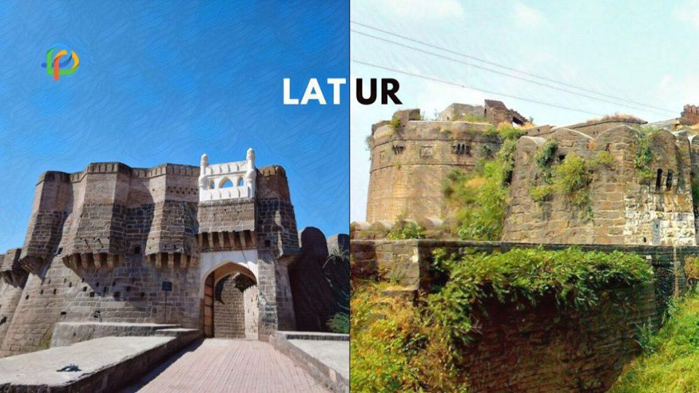
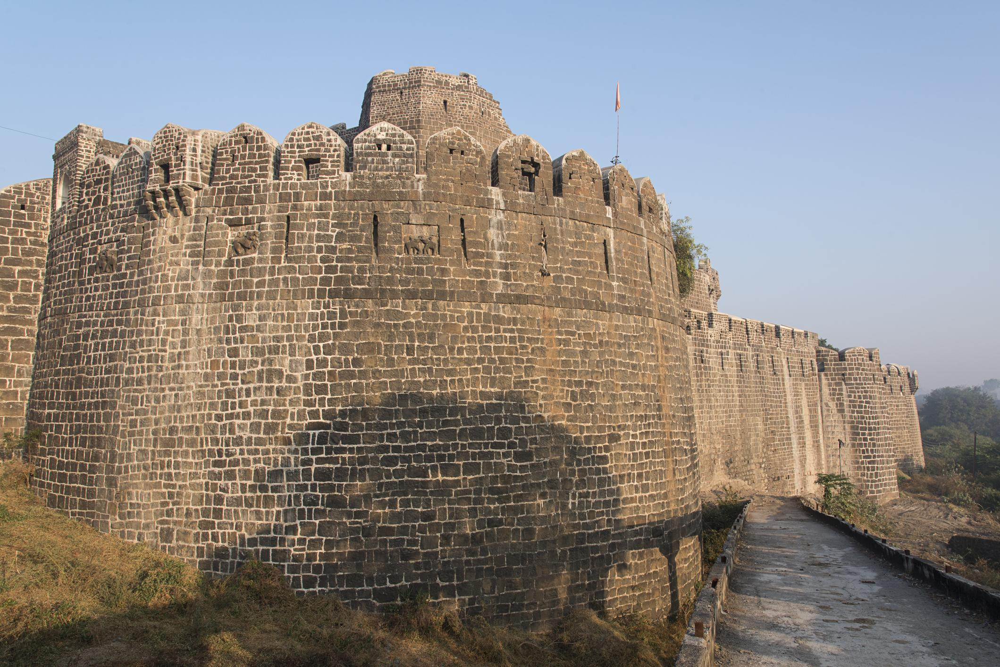
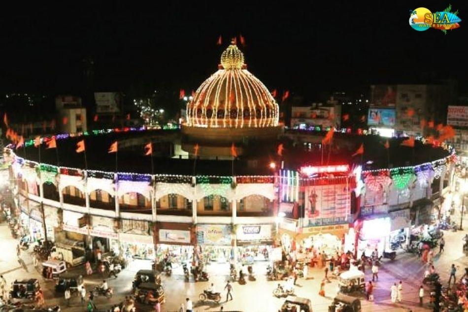
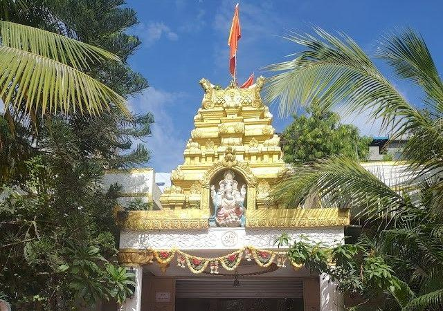
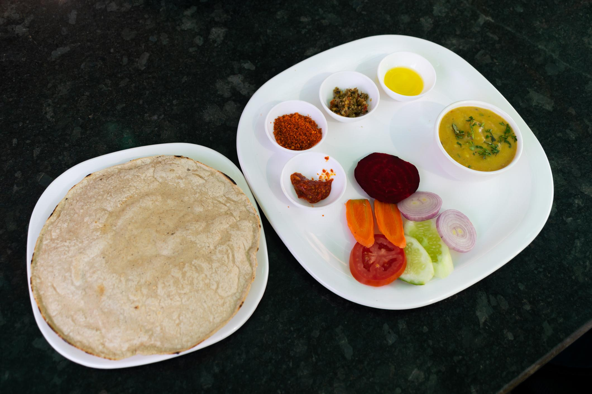
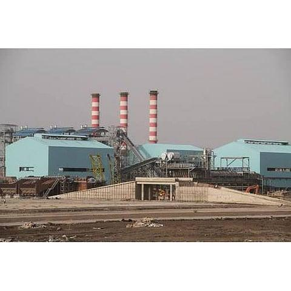
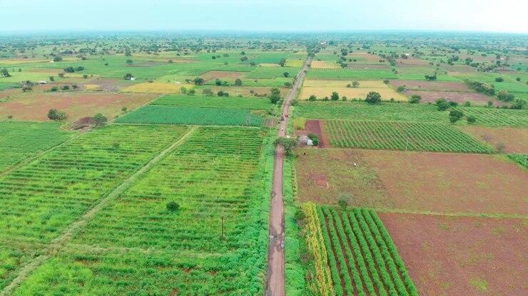
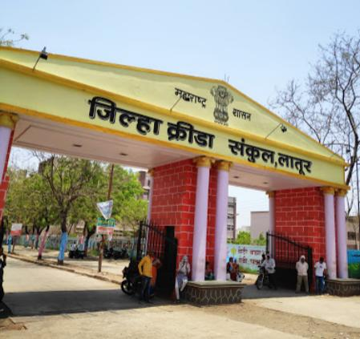

About

Latur is a vibrant city located in the southeastern corner of the Marathwada region in Maharashtra. It serves as a major administrative, educational, and commercial center for the surrounding districts. The city beautifully blends its deep-rooted historical identity with a fast-growing, modern lifestyle, making it a unique regional hub.
- Location: Southeastern corner of the Marathwada region in Maharashtra, India.
- Famous as: A major agricultural trading hub for soybeans and pulses, a historical fortress city, and the home of the highly successful "Latur Pattern" educational system.
History

The roots of Latur date back to ancient times when it was ruled by the Mauryas and Satavahanas. It later became the home of the Rashtrakuta kings, who laid the foundation for the city's early glory. Over the centuries, control shifted to the Chalukyas, the Yadavas of Deogiri, the Delhi Sultanate, the Mughal Empire, and eventually the Nizams of Hyderabad. In modern times, the city faced a tragic turning point during the devastating 1993 Latur earthquake. However, the community showed immense resilience, completely rebuilding the city into a well-planned urban landscape.
- In ancient times, Latur was called Lattaluru and served as the home capital for the Rashtrakuta kings. It was a famous center for learning, where an old stone carving shows that over 500 top scholars lived and taught at the local Papvinashak Temple. The city also sat on a major trade road that linked old Indian markets to global traders. Later in 1911, the British built a new railway line here, which quickly turned the town into a massive trading hub for cotton and grain.
Culture

The culture of Latur is a beautiful tapestry woven from multiple religious and linguistic traditions. Marathi is the primary language, but Urdu, Hindi, and Kannada are widely spoken, showing its unique position near state borders. The city is famous for its vibrant celebrations, especially the grand annual Shri Siddeshwar Fair, which draws thousands of devotees and traders. Traditional folk arts like Lavani dance, Gondhal performances, and Povadas (ballads) are highly cherished. The community also hosts the yearly Latur Festival to showcase local classical music, theater, and arts.
- Main Festivals: Shri Siddeshwar Fair, Latur Festival, Ganesh Chaturthi, and Eid
- Traditional Arts: Lavani dance, Gondhal performances, and Povadas (historic musical ballads).
- Language: Marathi, Hindi, Urdu, and Kannada.
Tourism

Latur offers a fascinating mix of ancient monuments, religious sites, and scenic spots for travelers to explore. A prime attraction is the massive Udgir Fort, which stands as a proud reminder of the historic treaty signed between the Marathas and the Nizam. Visitors also flock to the Kharosa Caves to view incredible rock-cut sculptures depicting Hindu deities. Right in the heart of the city stands Ganj Golai, a majestic, two-story circular structure built in 1917 that functions as the city's central market and landmark.
- Udgir Fort: A massive 12th-century fort built during the pre-Bahamani era. It is famous for the historic Battle of Udgir (1760) and features deep trenches, an underground tunnel, and old Arabic inscriptions.
- Kharosa: A group of 12 ancient rock-cut caves dating back to the 6th century. They house beautiful sculptures of Hindu deities like Narasimha and Shiva-Parvati, as well as statues of Lord Buddha and Jain Tirthankaras.
- Ganj Golai: A majestic, two-story circular structure built in 1917 that sits right in the heart of Latur City. It acts as a giant central market where 16 different roads meet, with a temple dedicated to Goddess Jagdamba located right at its center.
Famous Food

The local culinary scene is heavily influenced by both traditional Maharashtrian flavors and nearby Hyderabadi cuisine. Spicy Marathwada curries made with roasted coconut and local spice blends are daily staples. Because of its past ties to the Nizam, Latur serves excellent Mughlai dishes, rich biryanis, and traditional kebabs. Street food lovers enjoy hot kachoris, samosas, and panipuri in the bustling markets. The city is also famous for its unique South Indian breakfast joints that serve fluffy idlis and crispy dosas paired with special spicy chutneys.
- Famous Food: Hyderabadi biryani, spicy Marathwada chicken curry, and Mughlai kebabs.
- Local Specialty: Crispy kachoris, hot samosas, and traditional South Indian tiffin items served with special spicy chutneys.
Economy

Agriculture acts as the primary driving force behind Latur's thriving regional economy. The district is recognized as one of the largest trading hubs for soybeans and pulses in India, alongside massive sugar cane processing fields. The Maharashtra Industrial Development Corporation (MIDC) zones have successfully brought modern industries to the area. Today, the city boasts active steel manufacturing units, oil mills, and agro-based factories. Latur is also widely known as an educational hub, attracting thousands of students from across the state who support the local economy.
- Key Industries: Sugar processing mills, steel manufacturing units, oilseed mills, and agro-based factories.
- Main Crops: Soybeans, sugarcane, pulses (like pigeon peas and chickpeas), and sorghum.
Environment

Latur experiences a semi-arid climate, featuring very hot, dry summers and a brief but intense monsoon season. The landscape consists mostly of flat, fertile agricultural plains broken up by the low hills of the Balaghat range. Water management has historically been a critical focus for the region, leading to several innovative conservation projects. The local government and community groups work together to plant trees and create urban green spaces. These efforts help battle rising temperatures and maintain the local ecosystem.
- Climate: Semi-arid climate featuring hot, dry summers and moderate rainfall during the monsoon season.
- Key Rivers: Manjara River and Terna River.
- Protected Areas: Latur does not have any dedicated wildlife sanctuaries or national parks, but it features protected local forest reserves like the Wadwal Nagnath Bet (famous for rare medicinal plants).
Sports

The people of Latur hold a strong passion for both traditional Indian sports and modern athletic games. Traditional wrestling, known locally as kushti, has a deep heritage here, with young athletes training hard in mud pits called akhadas. Team games like kabaddi and kho-kho are incredibly popular in schools and rural communities. Cricket is widely played on every open ground, and the city regularly hosts regional tournaments. Local stadiums, like the District Sports Complex, provide tracking lanes and courts to help youth train for state-level competitions.
- Traditional Sports: Mud wrestling (kushti), kabaddi, kho-kho, and cricket.
- Focus: Developing youth talent at the grassroots level through local sports academies, schools, and well-equipped training centers like the District Sports Complex.